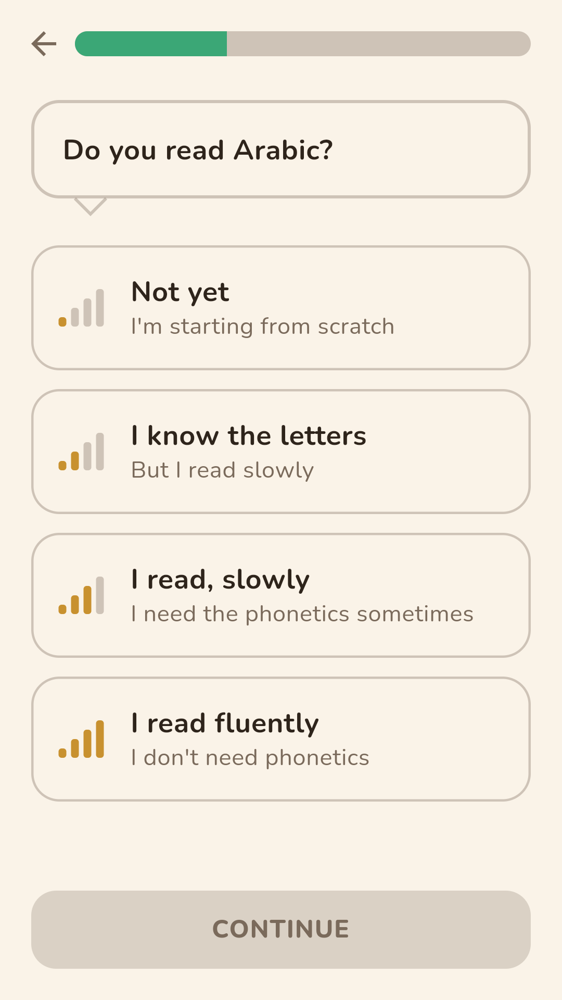
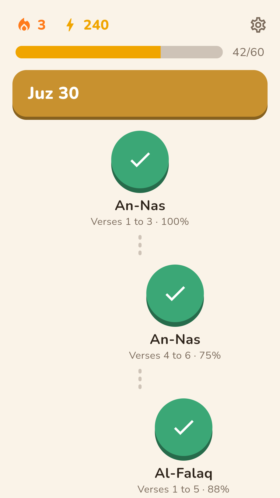
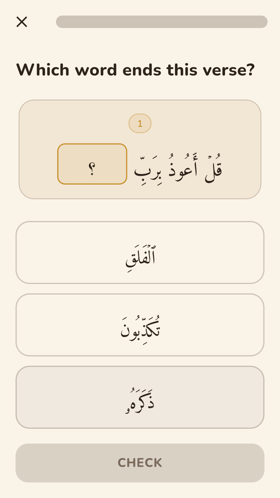
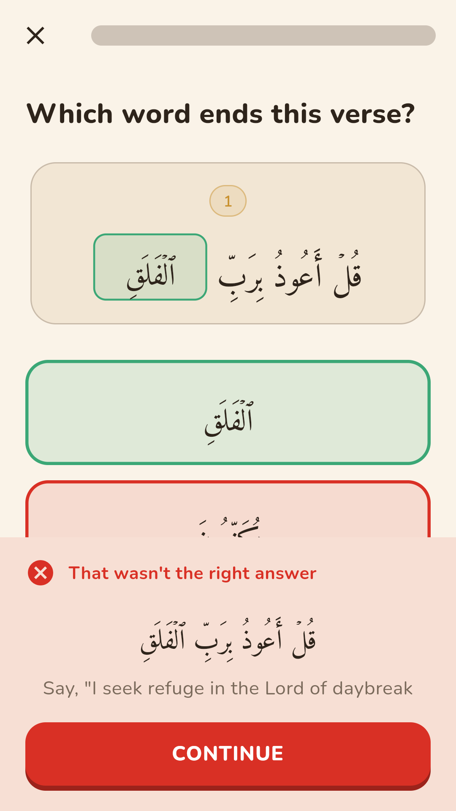

Hifdh
Écoute, répète, mémorise :
le Coran en quelques minutes par jour.




On part de là où tu en es
Un court test au premier lancement : ce que tu connais déjà n'est pas à réapprendre, et la phonétique ne s'affiche que si tu en as besoin.
Quatre façons de travailler un verset
Retrouver le mot qui manque, reconnaître la sourate, enchaîner sur le verset suivant, remettre les mots dans l'ordre. La difficulté monte avec ta maîtrise, jusqu'à la reconnaissance à l'oreille.
Les versets fragiles reviennent
La révision espacée ramène ce qui commence à s'effacer, au moment où ça compte. C'est ce qui fait la différence entre réviser et mémoriser.
Hors ligne, sans compte, sans publicité
Le texte, les traductions et la phonétique sont dans l'application. Rien à créer, rien à donner : ta progression reste sur ton téléphone.
Le texte avant tout
Aucune proposition n'est inventée : chaque mot et chaque verset proposés existent réellement dans le Coran, et après chaque réponse — juste ou fausse — l'application affiche et récite le verset complet et correct.